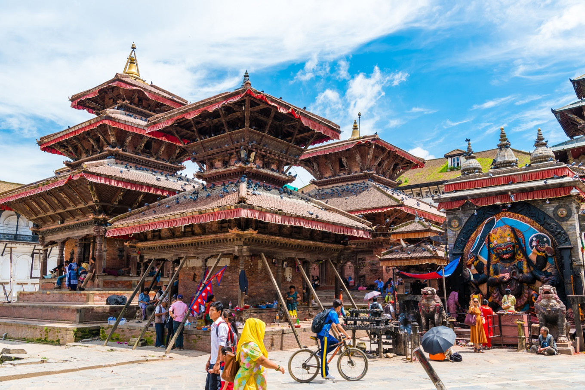

Nepal


Nepal has the highest mountain peak in the world.
Nepal, country of Asia, lying along the southern slopes of the Himalayan mountain ranges. It is a landlocked country located between India to the east, south, and west and the Tibet Autonomous Region of China to the north. Its territory extends roughly 500 miles (800 kilometres) from east to west and 90 to 150 miles from north to south. The capital is Kathmandu.
Nepal, long under the rule of hereditary prime ministers favouring a policy of isolation, remained closed to the outside world until a palace revolt in 1950 restored the crown’s authority in 1951; the country gained admission to the United Nations in 1955. In 1991 the kingdom established a multiparty parliamentary system. In 2008, however, after a decadelong period of violence and turbulent negotiation with a strong Maoist insurgency, the monarchy was dissolved, and Nepal was declared a democratic republic.
Wedged between two giants, India and China, Nepal seeks to keep a balance between the two countries in its foreign policy—and thus to remain independent. A factor that contributes immensely to the geopolitical importance of the country is the fact that a strong Nepal can deny China access to the rich Gangetic Plain; Nepal thus marks the southern boundary of the Chinese sphere north of the Himalayas in Asia.
As a result of its years of geographic and self-imposed isolation, Nepal is one of the least developed nations of the world. In recent years many countries, including India, China, the United States, the United Kingdom, Japan, Denmark, Germany, Canada, and Switzerland, have provided economic assistance to Nepal. The extent of foreign aid to Nepal has been influenced to a considerable degree by the strategic position of the country between India and China.
Content Source : Britannica